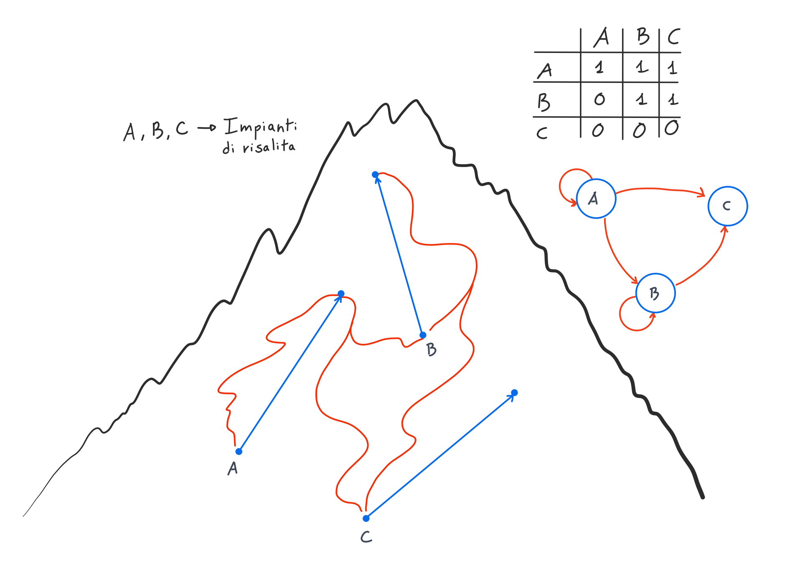
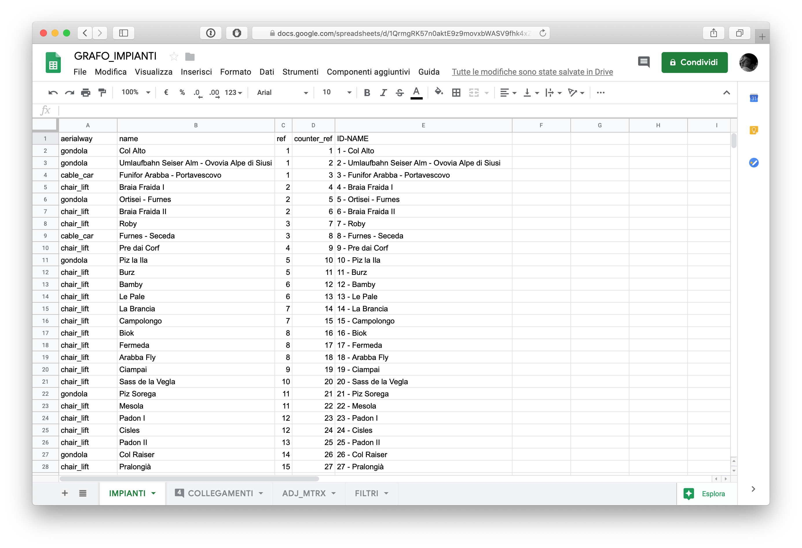
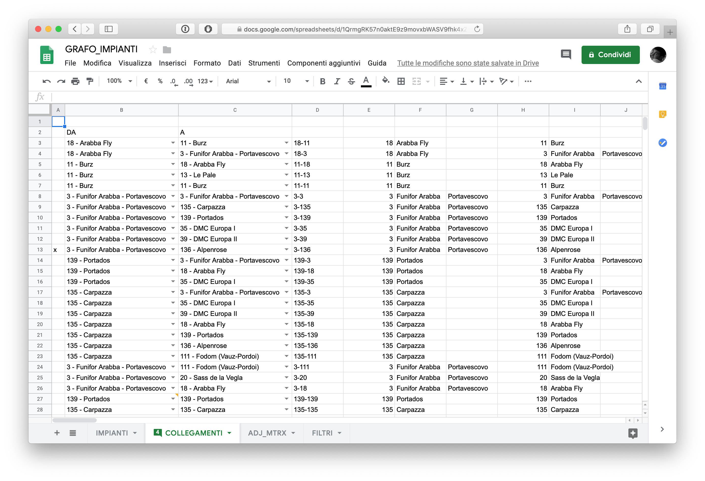
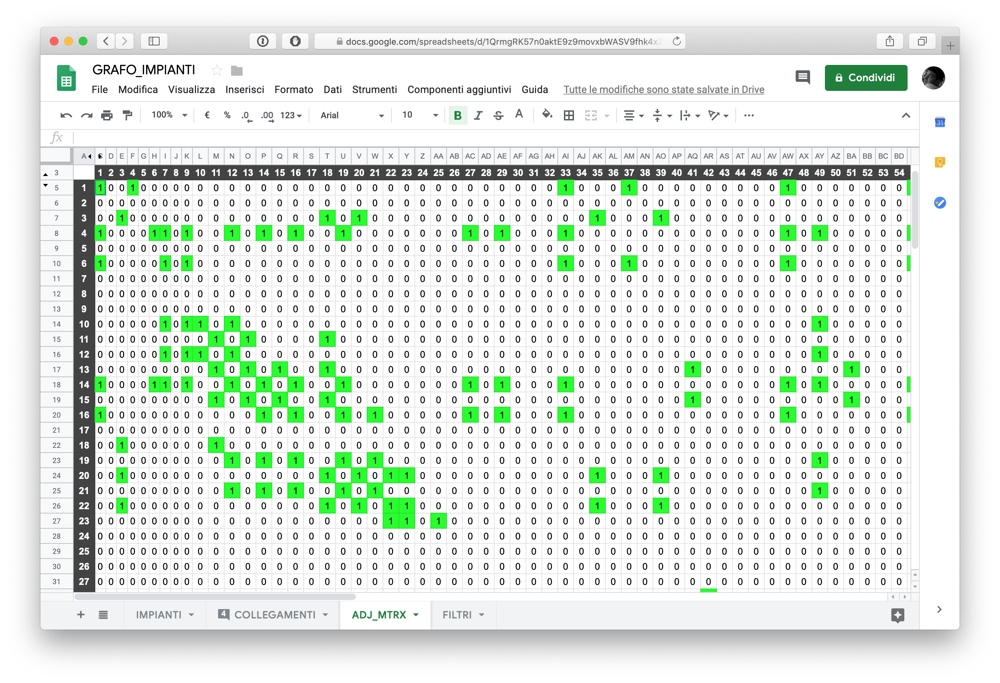

Analisi rete di trasporto sciistica
Il giro del Sellaronda
- Introduzione
- Analisi esplorativa preliminare
- Analisi rete
- Visualizzazione rete
- Studio centralità
- Ci sono degli impianti molto simili nella rete? Se si, quali?
- Come sono suddivisi gli impianti della rete rispetto alle connessioni fra essi?
- Che cosa succede alla rete se degli impianti vengono chiusi?
- Quanto è robusta la rete?
- Quanti impianti deve attraversare mediamente uno sciatore per raggiungerne un altro qualisasi?
Introduzione
Descrizione contesto della rete
Questa analisi è effettuata sulla rete fisica di trasporto sciistico composta dagli impianti di risalita caratterizzanti il “giro del Sellaronda”, anche chiamato “giro dei quattro passi”.
Il percorso sciistico in questione è così denominato perché, grazie alla rete di impianti di risalita, permette di percorrere il perimetro delimitante il gruppo montuoso del Sella. La rete permette l’attraversamento di quattro valli, da cui i rispettivi comprensori sciistici ( Fassa, Badia, Livinallongo, Gardena), e quattro passi caratterizzanti (Sella, Pordoi, Campolongo, Gardena).
- Il passo Sella collega la val di Fassa con la val Gardena
- Il passo Pordoi collega la val di Fassa con la val di Livinallongo
- Il passo Campolongo collega la val di Livinallongo con la val Badia
- Il passo Gardena collega la val Badia con la val Gardena
L’immagine sottostante evidenzia gli impianti di risalita che sono stati tenuti in considerazione durante l’analisi della rete.

Obiettivi
Gli obiettivi di questa analisi sono di rispondere alle domande formulate di seguito:
- Qual’è la distribuzione della tipologia degli impianti di risalita?
- Qual’è il dislivello medio che viene effettuato dagli impianti?
- Quali sono gli impianti più centrali nell’effettuare il giro dei quattro passi?
- Quali sono gli impianti che permettono di variare di più il proprio percorso sciistico?
- Ci sono degli impianti molto simili nella rete? Se si, quali?
- Quanti impianti deve attraversare mediamente uno sciatore per raggiungerne un altro qualisasi?
- Come sono suddivisi gli impianti della rete rispetto alle connessioni fra essi?
- Che cosa succede alla rete se degli impianti vengono chiusi?
- Quanto è robusta la rete?
Descrizione dataset
Il dataset per questa analisi è stato realizzato e composto ad-hoc attraverso il reperimento di dati disponibili online e sfruttando servizi terzi.
Reperimento informazioni base impianti risalita
Tutte le informazioni di base degli impianti di risalita sono state ottenute dai dati di Openstreetmap. Per la query dei dati di openstreetmap è stato utilizzato un ulteriore tool, Overpass Turbo. Overpass ha permesso di specificare, attraverso una interfaccia grafica, l’area geografica alla quale restringere la interrogazione dei dati al database di openstreetmap e, attraverso un linguaggio di query dedicato, richiedere tutti i dati riguardanti gli impianti di risalita.

Tramite Overpass è stato possibile esportare un file JSON contenente informazioni dettagliate riguardo gli impianti di risalita, quali:
- Nome impianto di risalita.
- TYPE tipologia dell’impianto di risalita. Dettagli sulla tipologia in seguito.
- REF dell’impianto, corrispondente al numero identificativo assegnato dal comprensorio sciistico.
- CAPACITY, capacità oraria di trasporto persone dell’impianto.
- OCCUPANCY, numero di persone per unità di trasporto dell’impianto.
- Altri dati riguardanti i nodi che componevano il tragitto dell’impianto di risalita. Per ogni nodo è specificata in particolare la LATITUDINE e LONGITUDINE di questo.
Filtro prime informazioni
Il file JSON ottenuto tramite Overpass è stato utilizzato come punto di partenza per la formattazione e costruzione del dataset di analisi. Non tutte le informazioni esportate dalla query erano necessarie, per questo sono state effettuate delle operazioni di filtro.
Non sono state presi in considerazione gli impianti di risalita delle tipologie di trasporto di beni (cibo e oggetti per rifugi altrimenti difficilmente raggiungibili) e risalita a trascinamento (skiilift). Le analisi si sono concentrate solamente sulle tipologie rimanenti, quali: Gondola (cabinovia), Cabina (funivia), Sedia/Panca (seggiovia).
Costruzione matrice adiacenza
L’obiettivo primaro è stato la costruzione di una matrice di adiacenza che potesse permettere la definizione di un grafo e l’interpretazione di esso grazie ad R.
Per ottenere ciò, tramite un preliminare filtro dei dati descritto precedentemente, questi sono stati esportati e elaborati attraverso Google Fogli/Sheets. All’interno di Fogli è stato eseguito il collegamento degli impianti dell’intera zona sciistica in analisi. Sono stati definiti gli archi che collegano gli impianti tra loro tramite la seguente logica:
Salendo su un impianto di risalita, arrivato a monte, quali sono gli altri impianti di risalita raggiungibili?

Effettuando i collegamenti tramite questa logica si sono ottenuti gli archi del grafo. Andando oltre, è stata creata automaticamente una matrice di adiacenza, sempre all’interno di fogli, che teneva in considerazione del mapping degli impianti.
  
Completamento costruzione dataset
Grazie alle informazioni riguardanti i nodi che compongono un impianto di risalita, ottenute tramite openstreetmap, sono state aggiunte le informazioni relative alla latitudine e longitudine rispettivamente della partenza dell’impianto e arrivo di quest’ultimo. Avendo queste coordinate geospaziali, tramite l’utilizzo delle API di Google Maps, è stata ricavata l’altitudine del punto di partenza e arrivo dell’impianto, consentendo quindi di calcolare anche il dislivello che caratterizza quest’ultimo.
Il dataset base è stato così composto, pronto per iniziare l’analisi.
Un esempio:
| aerialway | capacity | occupancy | name | ref | first_node | last_node | first_node_lat | first_node_lon | last_node_lat | last_node_lon | base_height | top_height | elevation |
|---|---|---|---|---|---|---|---|---|---|---|---|---|---|
| gondola | 2800 | 8 | Col Alto | 1 | 725415798 | 29916827 | 46.4278366 | 11.6982466 | 46.4307124 | 11.7227164 | 1347.4 | 2063.6 | 716.2 |
first_node e last_node sono gli id che identificano nel file JSON i dati geospaziali dei nodi. Con first_node si intende il nodo (geografico) di partenza dell’impianto di risalita, rispettivamente nodo di arrivo con last_node. base_height fa riferimento all’altezza base del nodo di partenza, top_height a quello di arrivo.
Informazioni di riferimento
Dal file json, e dai successivi filtri, sono stati rilevati 139 impianti. Di questi 139 impianti, sono stati connessi, ovvero hanno partecipato al componimento della rete, solamente 96. Questi 96, sono impianti che, nel processo di costruzione della matrice di adiacenza, hanno visto creare almeno un arco in ingresso o uscita dal nodo associato.
Quindi, per riassumere: - Numero impianti rilevati: 139. - Numero impianti connessi: 96. Effettivo numero di nodi (impianti di risalita) che compongono la rete - Dimensione matrice di adiacenza: 139x139.
Tramite la struttura dati del grafo (oggetto tbl_graph), eliminando ogni nodo con grado 0 (ovvero senza alcun collegamento con altri impianti di risalita), sono stati tenuti in considerazione solamente i dati dei nodi connessi.
Durante le analisi, è stato rilevato, tra i 139 impianti rilevati, un impianto di una categoria che non voleva essere presa in analisi. Questo non ha influito perché l’impianto non è stato connesso alla rete, quindi scartato nel processo di costruzione di quest’ultima, e di successiva analisi. E’ tenuto in considerazione solo all’interno della matrice di adiacenza.
Analisi esplorativa preliminare
A partire da questa sezione si inizia a dare una risposta alle domande che sono state poste precedentemente.
Le domande di questa sezione fanno parte di una analisi preliminare riguardante prevalentemente i dati degli impianti, senza considerare la loro struttura nella rete.
Qual’è la distribuzione della tipologia degli impianti di risalita?
Come è già stato anticipato, il totale degli impianti analizzati è 96.
Gli impianti di risalita sono rispettivamente suddivisi in 3 categorie:
cable_car(Funivia) composta da 8 impianti, rappresenta il 8.3% del totale.chair_lift(Cabinovia) composta da 67 impianti, rappresenta il 69.8% del totale.gondola(Seggiovia) composta da 21 impianti, rappresenta il 21.9% del totale.

Qual’è il dislivello medio che viene effettuato dagli impianti?
Per ogni impianto di risalita è stata analizzata la distribuzione dell’altitudine della partenza e quella di arrivo dello stesso. Il grafico sottostante riassume, diviso per categorie di impianti, le varie distribuzioni.

Nei grafici riportati possiamo notare alcune particolarità riguardanti le diverse categorie degli impianti di risalita. Mediamente gli impianti gondola sono quelli che partono da una altitudine inferiore rispetto alle altre categorie, anche se l’impianto che parte da una altezza più bassa è un chair_lift. Proprio a quest’ultima categoria, appartengono gli impianti che vengono utilizzati a partire da una altezza media più alta, concentrando le partenze tra i 1654 e i 2045 metri. Gli impianti cable_car, essendo pochi, presentano uno spettro ampio di partenze, che si concentrano tra i 1485 e 1857 metri.
Per quanto riguarda gli arrivi degli impianti, gondola e chair_lift, vengono raggiunte mediamente le stesse altitudini, 2103 metri la prima categoria, 2080 l’ultima.
Un grande distacco è presentato dai cable_car che raggiungono mediamente altitudini di 2380 metri all’arrivo, fino ad una punta massima di 3199 metri. Questa altitudine è la più alta raggiungibile tra tutti gli impianti analizzati grazie alla funivia Serauta - Punta Rocca.
Di seguito è riportato un grafico che rappresenta la distribuzione del dislivello che consentono di fare agli sciatori le diverse categorie di impianti.

Si noti come i dislivelli maggiori sono percorribili con impianti cable_car, mediamente 716.5 metri. Mentre quelli minori sono effettuabili con chair_lift, mediamente 198.7 metri. La categoria gondola mediamente effettua 444.4 metri di dislivello.
Questa analisi delle altitudini evince come gli impianti gondola e cable_car siano quelli che venono utilizzati principalmente a partire da altitudini basse, dalle valli, per trasportare gli sciatori a grandi elevazioni. Gli impianti chair_lift venongo utilizzati principalmente quando uno sciatore si trova già in quota e lo mantengono sempre ad una altitudine media elevata, giusta per percorrere la maggior parte delle piste senza dover tornare a valle.
Analisi rete
Visualizzazione rete
La rete di trasporto analizzata presenta 96 nodi e 572 archi.

Studio centralità
In questa sezione del report viene studiata la centralità degli impianti. Con centralità si intende quanto un nodo della rete, in questo caso un impianto di risalita, sia importante per la rete.
Quali sono gli impianti più centrali nell’effettuare il giro del sellaronda?
Il giro del sellarona rappresenta una attrazione sciistica per molti sciatori in tutto il mondo. Nell’effettuare il giro attorno al gruppo montuoso ci sono sicuramente degli impianti, lungo il percorso, obbligatori.
Per capire quali di questi siano cruciali, è stata presa in analisi la betweeness centrality, perché essa considera importanti tutti i nodi della rete che sono presenti nel maggior numero di percorsi fra tutti gli altri nodi all’interno di essa. Quindi, proprio come per il giro del sellaronda, gli impianti di risalita che si troveranno sempre lungo il percorso per muoversi all’interno della rete senza rimanere sempre all’interno della stessa valle.
Essendo questa una rete di trasporto, è proprio importante considerare come importanti gli impianti di risalita che permettono i collegamenti tra altri, e quindi permettono alle persone di spostarsi tra le varie zone sciistiche.

## Min. 1st Qu. Median Mean 3rd Qu. Max.
## 0.00 9.39 338.03 482.34 838.75 2381.32I quindici impianti più importanti sono: Arabba Fly, Borest, Funifor Arabba - Portavescovo, Boè, Campolongo, Fungeia, Dantercepies, Fodom (Vauz-Pordoi), Costabella, Lezuo Belvedere, Pradel - Rodella, Colz, Le Pale, Burz, Piz la Ila. Molti degli impianti elencati sono infatti tra quelli obbligati, e più cruciali, per permettere il classico giro del sellaronda. Sono impianti di risalita senza i quali non sarebbe possibile completare il collegamento tra le diverse vallate o, di raggiungere impianti cruciali per continuare il percorso.
Quali sono gli impianti che permettono di variare di più il proprio percorso sciistico?
Il secondo tipo di centralità preso in analisi è la out-degree di un nodo. Questo tipo di centralità è stato considerato perché per uno sciatore è importante che un impianto di risalita, e quindi un nodo della rete, gli permetta di raggiungere molti altri impianti. Infatti, ogni collegamento con altri impianti è ricollegabile ad una differente pista, oppure, ad una pista lunga con disparati collegamenti ad altri impianti lungo la percorrenza della stessa. In questo modo ci saranno più scelte per variare la destinazione e percorrere differenti piste avendo un ampio spettro di scelte. Lo sciatore prendendo un impianto di risalita molto centrale, rispetto a questo parametro, si trova quindi in una situazione perfetta per variare il proprio percorso della giornata.

## Min. 1st Qu. Median Mean 3rd Qu. Max.
## 1.000 4.000 6.000 5.958 8.000 14.000I dieci impianti più centrali secondo questo parametro sono: Braia Fraida, La Brancia, Sasso Levante, Sass Becè, Lezuo Belvedere, Norei - 5 Dita, Cavazes - Grohmann, Biok, Piz Sella, Comici I.

Ci sono degli impianti molto simili nella rete? Se si, quali?
In questa sezione viene analizzata la presenza di impianti di risalita che si presentano simili. La similitudine può essere espressa in due termini: - Gli impianti sono simili se hanno molti impianti uguali dai quali possono essere raggiunti. Per uno sciatore, quindi, due impianti sono simili se, salendo su uno di questi, il gruppo di impianti raggiungibili smontando è simile a quello di un altro impianto che avrebbe potuto prendere. - Gli impianti sono simili se raggiungono molti impianti uguali. Al contrario, due impianti possono essere simili, se per uno sciatore è possibile raggiungerli da uno stesso gruppo di impianti.
Visualizzazione prima tipologia similarità
Sono riportate di seguito le immagini satellitari della disposizione geografica degli impianti di risalita che presentano similarità per il gruppo di impianti dai quali sono raggiungibili.
I pallini blu rappresentano gli arrivi di tutti gli impianti di risalita dai quali è possibile raggiungere la partenza degli impianti evidenziati dal pallino di colore rosso. Si può notare come questi ultimi siano disposti geograficamente vicini o siano raggiungibili attraverso le stesse piste da sci. 

Visualizzazione seconda tipologia similarità
Sono riportate di seguito le immagini satellitari della disposizione geografica degli impianti di risalita che presentano similarità per il gruppo di impianti che possono essere raggiunti dalla loro stazione di arrivo.
I punti blu rappresentano le partenze di tutti gli impianti di risalita che è possibile raggiungere partendo dall’arrivo degli impianti evidenziati dai punti di colore rosso. Si può notare come questi ultimi si trovino nella stessa cima, a poca distanza, il che permette agli sciatori di percorrere le stesse piste da sci. 
Nota sulle similarità
Questo indice di somiglianza rappresenta principalmente una curiosità che potrebbe stuzzicare la mente di alcuni sciatori che vorrebbero avere una conoscenza della topologia della rete più approfondita. Al contrario, però, questo indice di somiglianza può essere utilizzato dall’ente del servizio della rete per valutare la costruzione di un nuovo impianto di risalita. Infatti, potrebbe essere utilizzato durante la fase di pianificazione della realizzazione per valutare quanto il nuovo impianto di risalita risulti simile ad altri nella stessa zona. Se questo indice fosse alto nei confronti di un altro impianto, potrebbe far ripensare alla valenza di un impianto nuovo, che risulterebbe non essere necessario, vista la presenza di un altro, esistente, con la stessa valenza in termini di trasporto e collegamenti.
Come sono suddivisi gli impianti della rete rispetto alle connessioni fra essi?
Uno sciatore durante la giornata può trovarsi in diversi punti della rete. In base a dove si trova in un certo istante, inconsciamente, è in una zona dove alcuni collegamenti con gli impianti sono più semplici rispetto ad altri. Questi raggruppamenti di impianti si formano grazie alle connessioni che intercorrono fra essi. Nello specifico sono stati identificati sette gruppi. Il grafico sottostante aiuta a capire quali sono questi gruppi all’interno della rete e quali impianti comprendono.

Che cosa succede alla rete se degli impianti vengono chiusi?
Il tempo metereologico è un fattore determinante per le giornate di uno sciatore. Fattori atmosferici come nuvolosità possono determinare la performance di una intera giornata. Non solo per gli sciatori è importante tenere controllato il meteo, ma anche per i gestori degli impianti. Può capitare, infatti, che un elevata presenza di vento ad alta quota, determini la forzata chiusura degli impianti di risalita per questioni di sicurezza.
In questa sezione viene simulata la situazione nella quale, a più di 2400mt, è presente forte vento. Questo determinerà la chiusura degli impianti, la conseguente rimozione di nodi dalla rete, che raggiungono altitudini uguali o superiori ai 2400mt.

Si può notare come la topologia della rete non presenti più un anello centrale. Il collegamento tra la Val di Fassa e la Val di Livinallongo è “saltato”.
Gli impianti che sono stati chiusi sono i seguenti: Funifor Arabba - Portavescovo, Padon II, Vallon, DMC Europa II, Banc - Serauta, Serauta - Punta Rocca, Sass Becè, Lezuo Belvedere.
C’è stata anche una variazione rispetto alla centralità di ogni singolo impianto a seguito della chiusura. Si può vedere come questa abbia influito grazie al grafico seguente.

Nel grafico si può notare come la distribuzione della centralità nell’istogramma di colore nero sia abbastanza equidistribuita e non sia presente un chiaro impianto di risalita più centrale rispetto a tutti gli altri. Al contrario, quando la rete subisce la chiusura degli impianti suddetti, emerge un impianto chiave, il Borest. Il flusso degli sciatori si accentra sopratutto attraverso questo impianto, che diventa chiave per mantenere la mobilita all’interno della rete.

Quanto è robusta la rete?
La rete di trasporto è formata da un insime di impianti interconnessi tra loro. La maggiorparte degli impianti è raggiungibile da qualsiasi altro impianto, tutti quelli che soddisfano questa assunzione si dice facciano parte del gruppo più connesso della rete. Per avere una stima di quanto robusta sia la rete, possiamo effettuare la rimozione di nodi da essa, in base a determinati parametri, e osservare come diminuisce il numero di impianti appartenendi al gruppo più connesso. Il primo di questi, e quello più banale, è sicuramente in modo casuale. La rimozione casusale di un nodo è possibile pensarla come un guasto ad un impianto, non si può prevedere ed è casuale all’interno della rete. Che cosa succede però se la rimozione non avviene casualmente, se è determinata da una proprietà dell’impianto? Verrà infatti visualizzato l’effetto della rimozione degli impianti più centrali, e cosa causano alla rete.
Minore sarà la grandezza del gruppo più connesso, maggiore sarà la disconnessione generale dell’intera rete, e, di conseguenza, la difficoltà e impossibilità della viabilità sciistica all’interno di essa.

Si può notare come la rimozione di nodi cruciali per il collegamento (flusso) comportino una separazione rapida della rete (quasi dimezzando la grandezza del gruppo). Una degradazione più regolare si ottiene dalle rimozioni degli impianti a partire da quelli che hanno un elevato numero di collegamenti verso altri. Infine, la rimozione di impianti casuali, sembra essere la situazione che degrada meno velocemente. C’è però da dire che talvolta questa rimozione causa un brusco aridimensionamento del gruppo. Infatti il grado di connettività della rete è 1. Questo vuol dire che basta rimuovere un solo impianto per separare (e quindi disconnettere) il gruppo di impianti. Se un guasto casuale dovesse capitare proprio a questo impianto, la degradazione sarebbe peggiore in questa situazione rispetto ad una controllata.
Quanti impianti deve attraversare mediamente uno sciatore per raggiungerne un altro qualisasi?
Ci riferiremo a distanza come numero di impianti che uno sciatore deve prendere per perccorrere il cammino fino ad un altro impianto.
Mediamente all’interno di questa rete, la distanza tra due impianti qualsiasi è di 6.19. Questo vuol dire che uno sciatore in qualsiasi momento, per raggiungere un altro impianto qualsiasi dovrà prendere nella media almeno 6.19 altri impianti.
Nel grafico sottostante è riportato l’istogramma delle distanze degli impianti della rete. 
Il percorso di distanza maggiore tra due impianti della rete, invece, è lungo 18 impianti. Gli impianti che compongono questo percorso sono: Santa Cristina - Monte Pana, Monte Seura, Tramans, Fungeia, Costabella, Dantercepies, Borest, Costes de L’Ega, Col Alto, Braia Fraida, Pre dai Corf, Piz la Ila, Colz, Doninz, Gardenaccia, Sponata, Pradüc, Santa Croce, La Crusc.